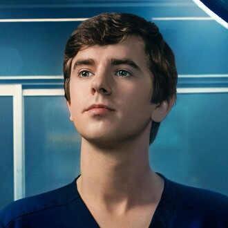
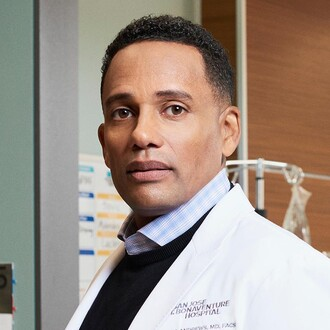
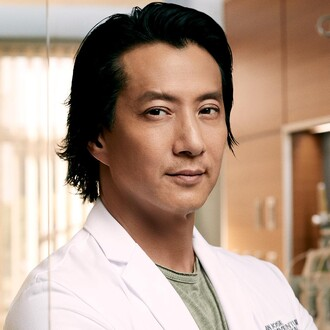
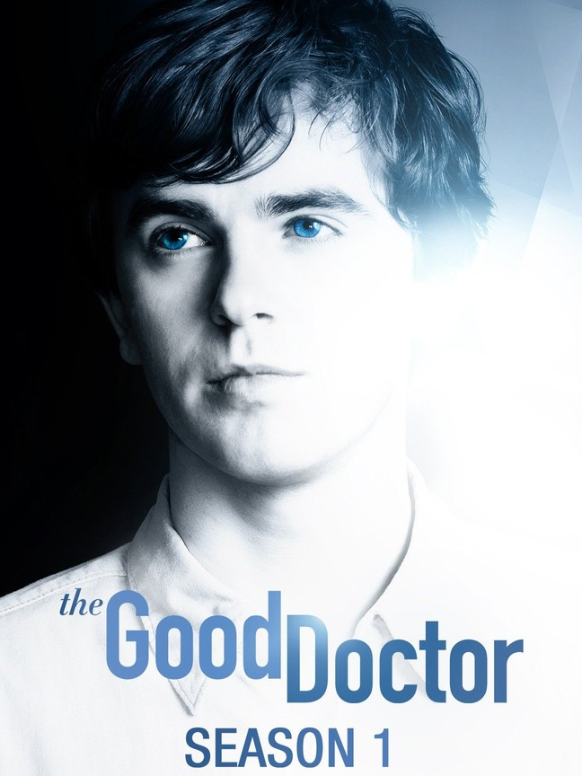
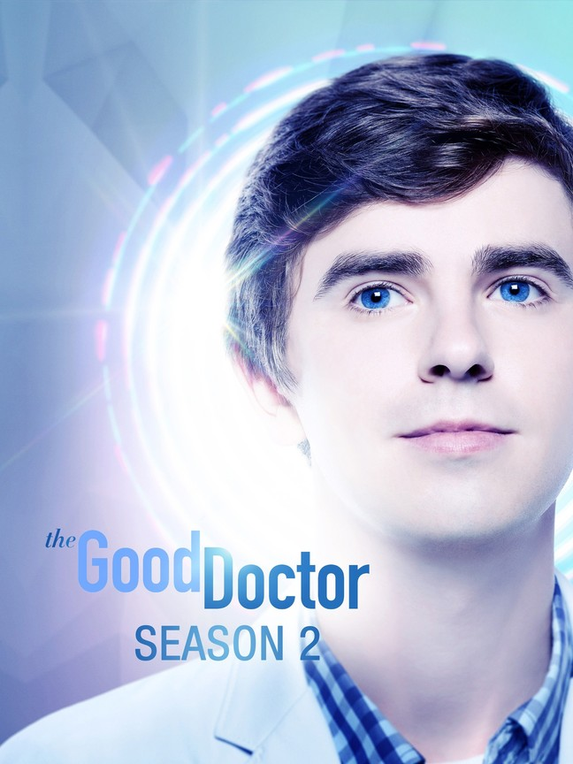
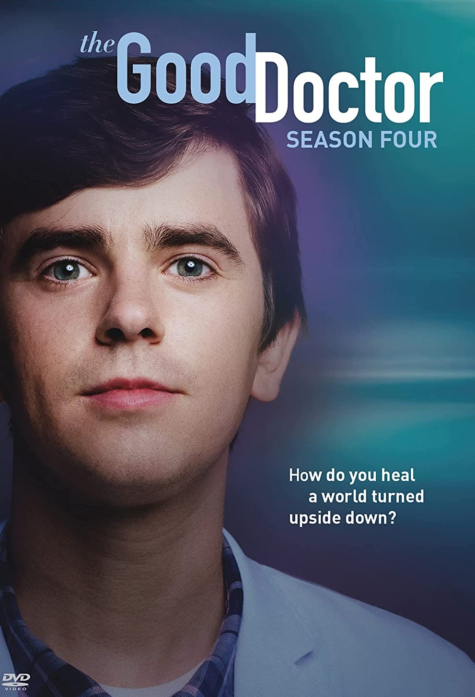
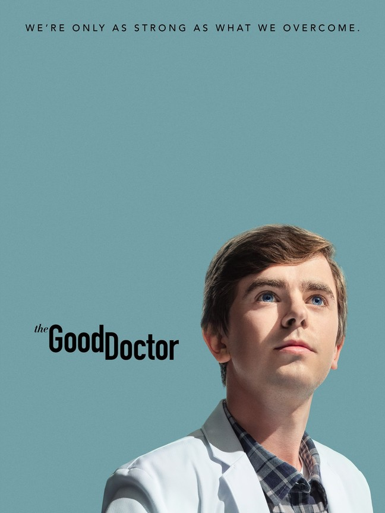

A young surgeon with autism and savant syndrome uses his extraordinary gifts to save lives and challenge skepticism.
2017 ‧ Medical drama ‧ 5 seasons
MEET THE CAST

Freddie Highmore
as Dr.Shaun Murphy

Hill Harper
as Dr.Marcus Andrews
Richard Schiff
as Dr.Aaron Glassman
Christina Chang
as Dr.Audrey Lim
Fiona Gubelmann
as Dr.Morgin Reznick

Will YUN LEE
as Dr.Alex Park
Paige Spara
as Lea
Noah Galvin
as Dr.Asher Wolke
Bria Samone
as Dr.Jordan Allen
| Seasons | Description | Release Date |
|---|---|---|
|  Season 1 | A talented surgeon with autism and savant syndrome joins a prestigious hospital, where he faces skepticism from both the patients and staff. | Sep 25, 2017 |
|  Season 2 | As his interpersonal relationships grow stronger, Shaun continues to use his extraordinary gifts to help his surgical patients. | Nov 26, 2018 |
 Season 3
Season 3
|
Shaun pushes for a radical operation in order to save a newlywed's life. In addition, he and Dr. Lever give dating a shot. | Sep 23, 2019 |
|  Season 4 | Dr. Shaun Murphy must perform a risky surgery on a patient without electricity when the power suddenly goes out at the hospital in Guatemala. | Jun 7, 2021 |
|  Season 5 | Shaun and Lea make a big life decision and are pleasantly surprised by the support they receive from their friends at the hospital | May 16, 2022 |